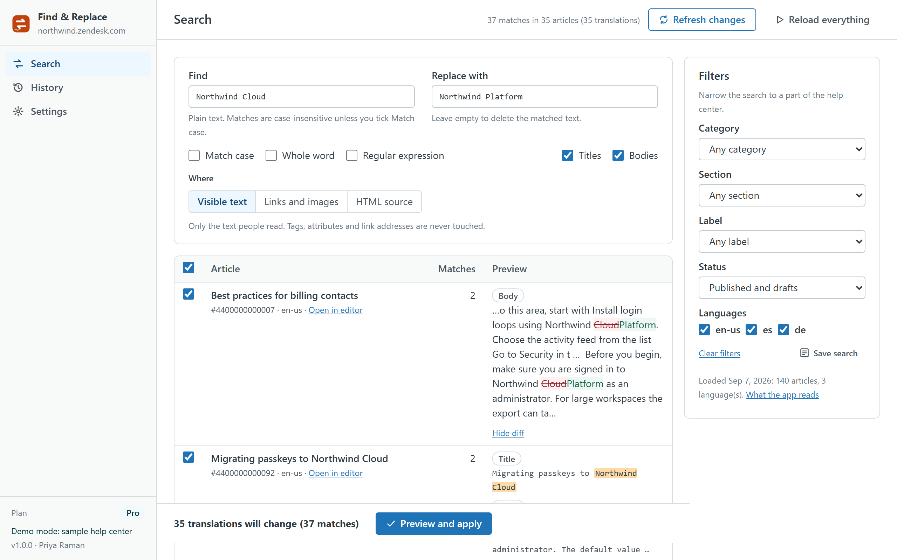
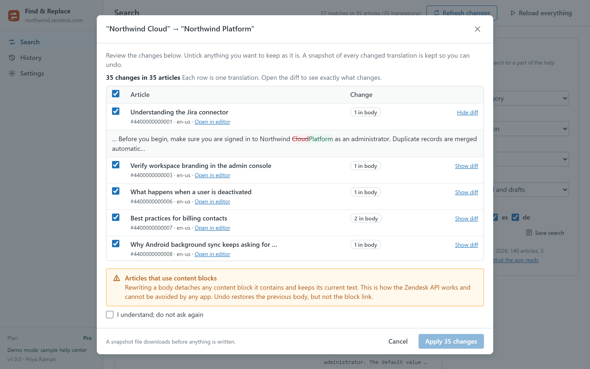

Help Center Find & Replace
Rename a product, move to a new domain, update prices or legal wording in every help center article and language at once. Search with plain text or regular expressions, review each match with its context and a word-by-word diff, keep a snapshot, apply, and undo with one click. It runs in your browser with your own Zendesk permissions.

How a run works
- Search. Type what to find and what to replace it with. Match case, whole word and regular expressions with $1 groups are available. Narrow by category, section, label, status and language.
- Choose where. Visible text only (tags, attributes and link addresses are never touched), links and images (href and src, ideal for domain migrations) or the HTML source for power users.
- Review. Every matching translation is a row with its context and a diff of the replacement. Untick anything you want to keep.
- Apply. The preview dialog lists each change again; a snapshot of the previous version downloads and is kept in the browser before anything is written. Progress and per-article errors are reported, and requests are paced inside Zendesk's rate limits.
- Undo. Any run can be undone from History, or restored from the snapshot file on another computer.

Plans
| Free | Pro · $19 per month per account | |
|---|---|---|
| Search and preview | Unlimited | Unlimited |
| Translations changed per run | 5 | 500 |
| Languages | Default language | All enabled languages |
| Where it replaces | Visible text | Visible text, links and images, HTML source |
| Regular expressions | — | ✓ |
| Snapshot before every run, undo, restore from file | ✓ | ✓ |
| Runs kept for undo | 3 | 30 |
| Saved searches | — | ✓ |
| Free trial | 14 days |
Pro is billed through the Zendesk Marketplace per account, not per agent, and can be cancelled from Admin Center at any time.
Safety
- Nothing is written until you confirm in the preview, and what you see in the diff is exactly what is sent: the same engine builds the preview and the change.
- A snapshot of every changed translation is saved before writing. Undo puts the previous version back; the snapshot file also works with Restore on any computer.
- Agents whose role cannot edit articles can search and preview but never apply.
- Articles that use content blocks are flagged: rewriting a body detaches its blocks, which is how the Zendesk API works and cannot be avoided by any app.
Privacy
The app has no server. Articles are read and written through the Zendesk API with the signed-in agent's session. The article cache, the runs with their snapshots, saved searches and settings live in the browser's local storage on the agent's computer and can be cleared from Settings. Nothing is sent to the developer or to any third party; there are no analytics, cookies or AI services. The same privacy policy and terms as Help Center Doctor apply.
Install
- Open the listing on the Zendesk Marketplace (link added once the listing is approved), click Install and choose a plan. You need to be a Zendesk admin.
- Choose the roles or groups that may use the app, then click Install.
- In Zendesk Support, open Find & Replace from the left navigation bar and click Load help center.
Frequently asked questions
Can it break my articles? In the default mode it only edits the text people read, never tags or attributes. Links and images mode only edits addresses. HTML source mode can change markup, which is why it shows a warning and a diff for every article. Every run has a snapshot and Undo.
Does it handle translations? Yes. Each language is a separate row; Pro searches every enabled language, Free the default one.
How fast is it? A 5,000-article, three-language help center loads in a couple of seconds and a search over all 15,000 translations answers in about six seconds. Writes go one request per translation, paced to Zendesk's limits.
Also from the same developer: Help Center Doctor finds and fixes broken links, missing images, stale content and structure problems; Help Center Print & Export turns articles into PDF, Word, HTML, Markdown, ZIP and CSV; Help Center Article Templates creates drafts from templates with fill-in placeholders; Help Center Link Checker is the free link checker.
Support: support@helpcenterdoctor.app, answered within one business day.